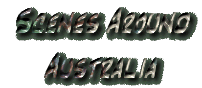
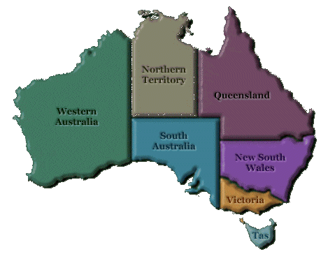

Victoria
Tasmania New South Wales Queensland
Western Australia
Northern Territory South Australia
The image map above will take you to the various states of Australia, where'll you'll be able to browse through the various photographs.
Enjoy!
Scenery
Inhabitants Honorary Aussies Links Awards
Bio Credits and
things
Guestbook Home
Write